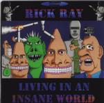

| Artist: | Rick Ray |
| Title: | Living In An Insane World |
| Label: | Neurosis Records |
| Length(s): | 69 minutes |
| Year(s) of release: | 2000 |
| Month of review: | [01/2001] |
| 1) | Poured Into Their Mold | 7.17 |
| 2) | Black Top Hat | 4.06 |
| 3) | Guitarmy Ants | 3.33 |
| 4) | Access Denied | 5.03 |
| 5) | Living In An Insane World | 6.17 |
| 6) | Thoughts Of You | 2.52 |
| 7) | The Future, The End, Eternity | 4.27 |
| 8) | March Of The Locust | 5.44 |
| 9) | Weaved Into Time | 5.56 |
| 10) | Burn Of The Century | 4.34 |
| 11) | Mystery Babylon Interlude | 1.18 |
| 12) | Watching The Clock | 4.03 |
| 13) | I Need You With Me | 5.33 |
| 14) | Times Moves On | 6.50 |
| 15) | ?? | 2.00 |
After this long opener we come to Black Top Hat. The vocals of Ray sound different here, more echo on them and that sounds better. The vocals of Ray are not really good, but like I've said often, they fit with the lo-fi music. This track is a more or less a ballad, rather intimate with soft echoey guitars. A sad track.
Guitarmy Ants opens with quick fingered acoustic guitar. Like the previous track quite melodic. Access Denied is mostly scale running guitarwork, with meandering clarinet work by Schultz. All a bit laid back and slow. The tracks ends with some short guitaristic excursions.
The title track is back to rock, but as always of the mid-tempo type. The vocal melody shows little difference with the opening track. In fact, the vocal melody is one that can be heard on any record of Rick Ray. The intermezzo is more or less percussion/bass dominated this time. Ray then takes a few minutes to experiment with all kinds of weird sounds and samples.
Thoughts Of You is a short acoustic track. It sounds much clearer than the other tracks. Quite a nice one.
The Future, The End, Eternity is again of the type of Poured Into Their Mold, but with some keyboard effects and some jazzy drumming at the end. In March Of The Locust (really sounds like a march), the clarinet of Schultz returns. Notwithstanding the meandering melodies, the song is quite melodic and has its merits.
Weaved Into Time is also a rather easy-going track, but it has some darker overtones and quite a bit of slow menace in there. The middle part consist of fast acoustic guitar and bass. Burn Of The Century is one in which heavy drum rolls and panicky clarinet combine until the song grinds down to a halt. Then we get some nice moody atmospheric keyboards.
Mystery Babylon Interlude is a short political intrigue. It is followed by Watching The Clock which has a slow character. The intermezzo is repetitive.
I Need You With Me opens with quick fingered guitar work, typical of Ray's style. The song itself has an easy-going pace (also quite typical), but the guitar playing stays throughout. The closer is Time Moves On which is a balladic, introspective piece with a mellow melody and doubled vocals.
As an afterthought we get some reversed sampled voices.